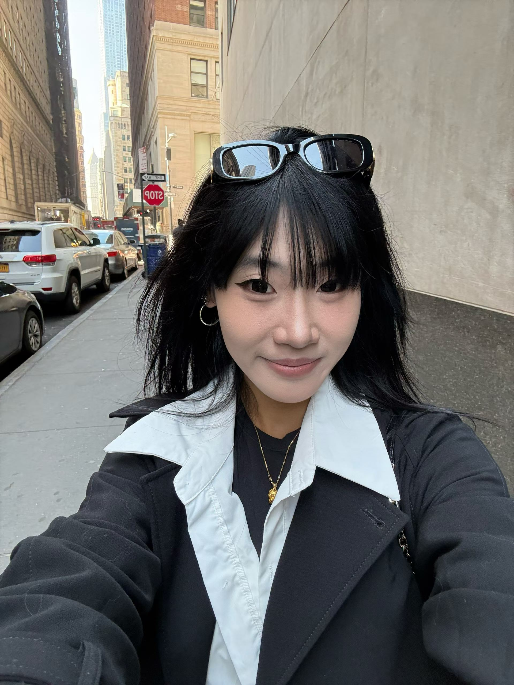
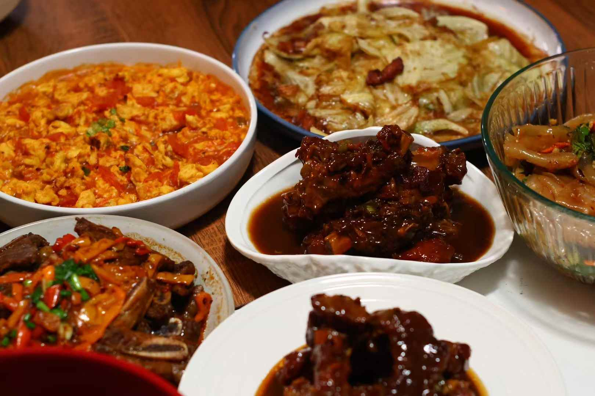
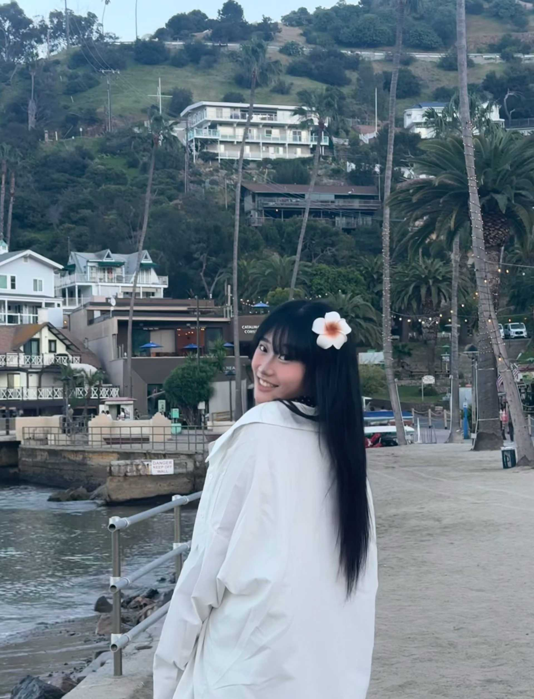

This space is less about formal writing and more about the things that stay with me — ideas, small reflections, places I’ve loved, and pieces of everyday life that shape how I think.
I’m a swimmer and hold a lifeguard certification, and movement has always been an important part of my life. I also love cycling classes and different kinds of sports because they help me stay focused, balanced, and energized.
I’m an INFP and naturally detail-oriented, which means I pay attention not only to the quality of what I do, but also to people’s emotions and the feeling of an experience. I care about how things work, but also how they land.
That is also why I’m especially interested in data and finance — I enjoy understanding patterns, solving problems, and turning information into something useful and meaningful.
I’ve realized that the way I approach work is not that different from the way I experience life. Whether I’m working with data, traveling somewhere new, or taking a photo I want to keep, I’m usually trying to notice the small things that give something its meaning.
In that sense, analysis and observation do not feel separate to me. One helps me understand the world more clearly, and the other helps me feel it more fully.
I love traveling and photography because they let me hold onto a feeling for a little longer — a place, a mood, a quiet detail, or just a moment that felt worth remembering.



Lately, Emerald Eyes has been one of those songs I keep returning to — soft, reflective, and a little cinematic in the way it lingers.
Recently, I’ve been learning how to cook, reading more physical books, and trying to slow down enough to notice small moments that would usually pass by. There’s something nice about doing things slowly — it makes life feel a little softer and more real.